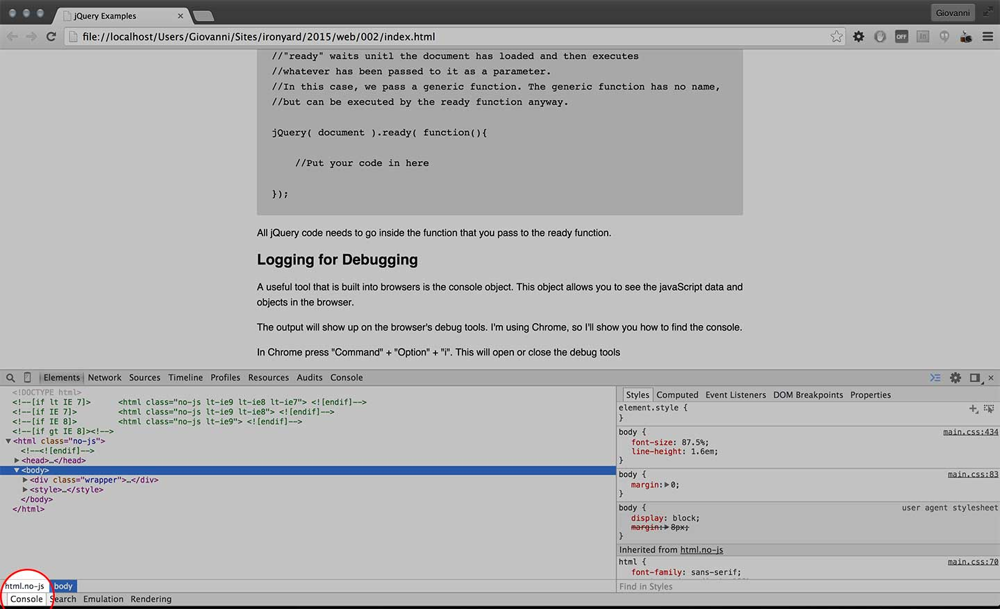
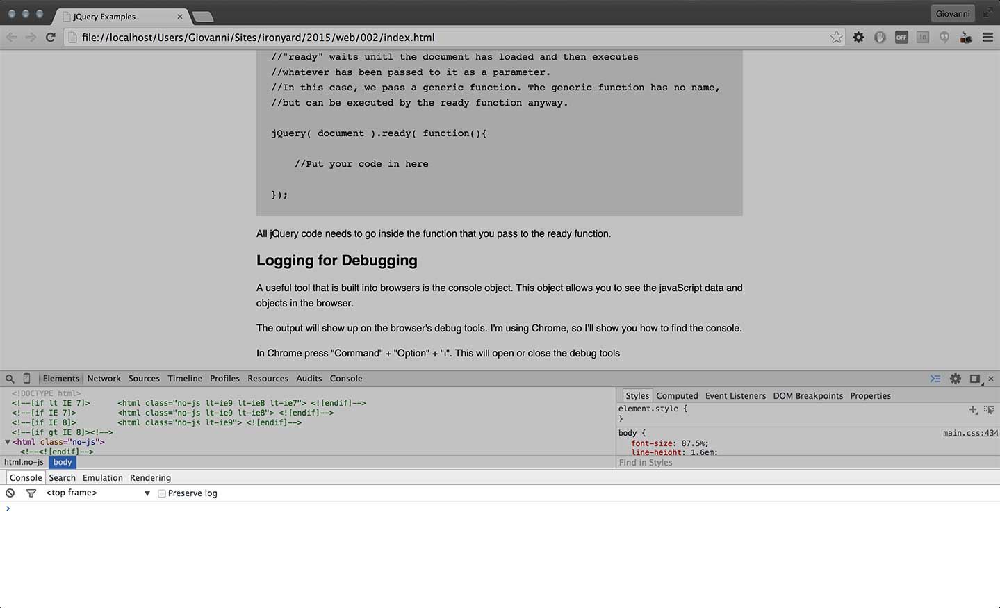

What that means is that jQuery is a bunch of javaScript that has already been written and tested so that you don't have to. It's designed to simplify selecting and interacting with the DOM. Browsers have implemented javaScript differently from one another, so writting "raw" JS can mean a lot of security code and duplicated objects.
jQuery is designed around the idea that most of the people using it won't be javaScript experts. It is designed so that CSS selectors can be used indecriminately to select DOM elements and manipulate them. jQuery also comes with a host of functions that do common tasks like hide elements and change applied styling. JQuery also offers a list of functions for data management and communicating with the server, but those are advanced topics and will only be touched upon if you guys get way ahead.
You can't use jQuery unless you include it in your website. It works much the same as CSS but the syntax is a little different.
For this page, jQuery is included in the root of the site, so I can link directly to it. You will need to adjust your path if you are storing jQuery in a different location.
<script src="jquery.min.js"></script>
You will see the '$' sign a lot in jQuery which can be very confusing to new users, but know that "$" is just an alias for the jQuery object. An alias is just another name for the same thing. In this case, 'jQuery' = '$'.
jQuery is an object that has all of its members and functions directly attached to it, but jQuery needs to be initialized to work properly. The reason that jQuery needs to be initialized is because of the way that the browser loads content. jQuery needs to wait until the browser has rendered enough of the DOM for it to work upon. If this is Greek, don't worry, it will eventually make sense.
To ensure that the browser is ready, jQuery has a built in function that allows it to make it's own check and initialize itself. This is the ready function.
$( document ).ready( function(){
//Put your code in here
});
Lets discuss what is going on in this example. First, don't forget that '$' is the same as 'jQuery'. I could just as easiy written:
//Both of these function are exactly the same
$( document ).ready( function(){
//Put your code in here
});
jQuery( document ).ready( function(){
//Put your code in here
});
First, we use the jQuery object to select a DOM element. In this case, we are selecting the document object, but you coul also select regular HTML elements with tag names, ids, and class names.
What you need to remember is that the jQuery object is just a function, and if follows the same conventions.
//This is how we select the document object.
$( document )...
//Now, jQuery has selected the document object and retured itself
//We can attach another jQuery function to the selector and act upon our selection.
$( document ).ready( ... );
//notice that "ready" is just another function.
//"ready" waits unitl the document has loaded and then executes
//whatever has been passed to it as a parameter.
//In this case, we pass a generic function. The generic function has no name,
//but can be executed by the ready function anyway.
jQuery( document ).ready( function(){
//Put your code in here
});
All jQuery code needs to go inside the function that you pass to the ready function.
A useful tool that is built into browsers is the console object. This object allows you to see the javaScript data and objects in the browser.
The output will show up on the browser's debug tools. I'm using Chrome, so I'll show you how to find the console.
In Chrome press "Command" + "Option" + "i". This will open or close the debug tools
 The Debug Window is open but the Console view is hidden.What you are looking for is in the bottom left hand corner of the debug tools window. You are looking for a tab called "console".
 Select Console and expand it up to show the logged data.Select the tab and drag the console window up so that you can see the output.
We are using jQuery, so every bit of code we write will be wrapped in the ready function. We are going to log the string "Hello World!" to the console view in Chrome.
In a nutshell, what we are doing is fairly straightforward. We are asking the console object to execute it's log function. The log function takes it's parameters and spits them out in the console window. In this case, the parameter being logged is the string "Hello World!"
Here is the code:
$( document ).ready( function(){
//this is the bit of code that actually does the logging
console.log( "Hello World!" );
});
Keep in mind that you can log just about anything. You can log variable, functions, objects, strings or any other data that might make you life easier as a programmer.
jQuery offers a robust api for selecting DOM elements that allows you to use tag names, classes, and ids to grab the bit of HTML that you want to manipulate. However, there are a few things to keep in mind.
<ul id="nav_container">
<li><a href="#" id="home_link" class="nav_element">Home</a></li>
<li><a href="#" id="about_link" class="nav_element">About</a></li>
<li><a href="#" id="contact_link">Contact Us</a></li>
<li><a href="#" id="faq_link">FAQ</a></li>
</ul>
//lets select some stuff
$( document ).ready( function(){
//this will select the first two links,
//because the have a class of "nav_element"
$( ".nav_element" )...
//this will select every li, inclucing all
//the other ones on this page! Be careful,
//jQuery deosn't know that you only want to
//select from this one unordered list.
$( "li" )...
//this will select ever unordered list on the page
//you'll need to find a way to specify which unordered
//list you want to select, hence the next example
$( "ul" )...
//this will select only the unordered list
//with an id of 'nav_container'
$( "#nav_container" )...
//this will select all the list items in the unordered list
//with an id of 'nav_container'
//however, its slow
$( "#nav_container li" )...
//This example does the same thing as the last example, but is faster.
//The find function is optimized, whereas CSS specificity is not.
//Both work, but this is better in the long run
$( "#nav_container" ).find( "li" )...
});
Now that you know how to select elements, lets discuss some of jQuery's basic functions. Much of what you'll do in a custom web app will require a deeper understanding of javaScript, but jQuery provides a library of functions for common actions, like changing the color of an element or adding a class to an element. What follows is a series of Pens from CodePen that illustrate some of this functionality.
See the Pen Changing CSS with jQuery by Giovanni DiFeterici (@giodif) on CodePen.
Changing CSS with javaScript isn't a great practice, but sometimes it's necessary. In the Codpen exmaple above, I am attaching click events to each of the buttons on the page. One button fires function that adds inline CSS to the selected HTML elements, #first and #second. This inline CSS added changes the div in the following way.
//We started with theis bit of HTML
<div id="first"></div>
//After the attribute is added, it looks like this
<div id="first" style="background-color:green;"></div>
The "Restore Colors" button simply removes the style attribute that has been added to the div. Because no styles are overriding the CSS, the background color reverts to what it was to begin with.
See the Pen Changing CSS with jQuery by Giovanni DiFeterici (@giodif) on CodePen.
This CodePen does exactly what the last on did, but in a different way. Instead of adding a style attribute to the divs, it adds a class. The styling for that class is defined in the CSS file, so whent the class is added to the element, it changes visually. This is a better practice than the last example because it doesn't add inline styles to the HTML.
//We started with theis bit of HTML
<div id="first"></div>
//After the class is added, it looks like this
<div id="first" class="green"></div>
Note: This will not interfere with any classes already added to your HTML element.
A common use case for jQuery is for mobile navigation. Again, this isn't considered a best practice, but its amazingly common. Plus, it's useful for illustrating how easy it is to create a great visual effect with jQuery.
See the Pen KwmVGM by Giovanni DiFeterici (@giodif) on CodePen.
Obviously, I can't explain the entire jQuery library in one page. I hope this acts as a basic primer. To gain a better understanding of jQuery, you need to review the jQuery documentation site for more information on specific topics.
Here are a few links to useful materials that will help you understand jQuery.